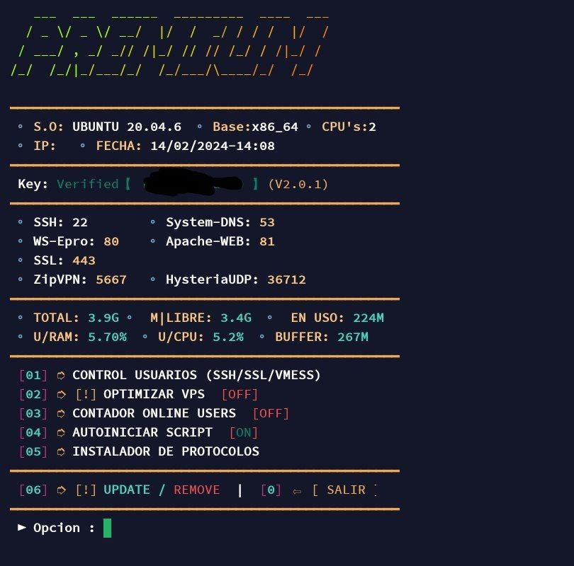

¿Qué es VPN
VPN son las siglas de Virtual Private Network (Red Privada Virtual en español). Una VPN es una tecnología que permite la creación de una conexión segura y privada entre diferentes dispositivos a través de una red pública, como Internet.
Básicamente, una VPN actúa como un túnel seguro entre el dispositivo del usuario y el servidor VPN, permitiendo que los datos se transmitan de forma encriptada y segura. Esto significa que cualquier persona que intente interceptar la conexión no podrá acceder a los datos transmitidos a través de la VPN.
Las VPN se utilizan comúnmente para proteger la privacidad y la seguridad de los usuarios en línea, especialmente cuando se conectan a redes públicas no seguras, como las redes Wi-Fi en cafeterías, aeropuertos o bibliotecas. También se utilizan para acceder a contenido restringido geográficamente o para evitar la censura en países con restricciones en línea.
Nuestra Ubicación
Nuesta tienda se ubica en el centro de la Ciudad
Características del VPN
- Privacidad y Seguridad
- Anonimato
- Acceso a contenido restringido
- Versatilidad
- Reducción de costos
- Saltar Censuras